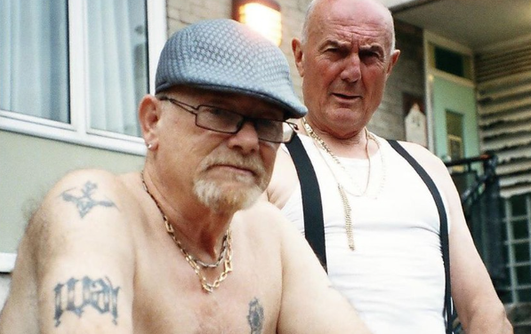

Want to learn more about Pete & Bas's discography? Click here!
Learn more about Pete & Bas's background

Pete & Bas are a British hip hop duo based in London, formed in 2017.
They are notable for the songs "The Old Estate", "Dents in a Peugeot", and their debut
single, "Shut Ya Mouth". The duo consists of two rap artists aged in their... Want to learn more about Pete & Bas's background? Click here!